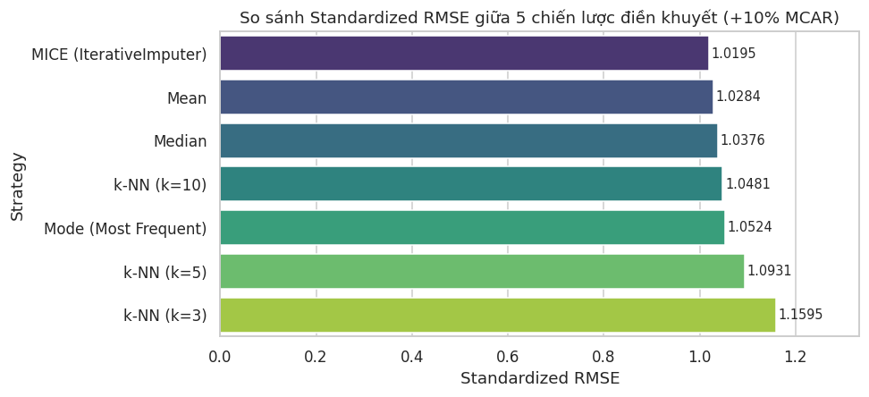
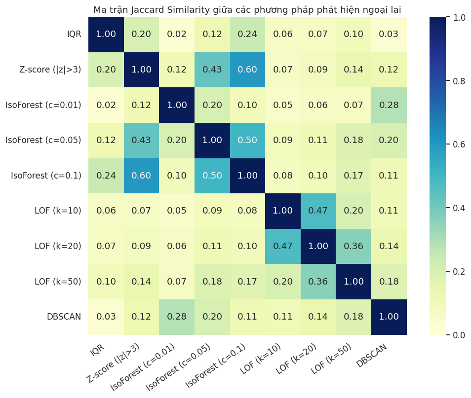
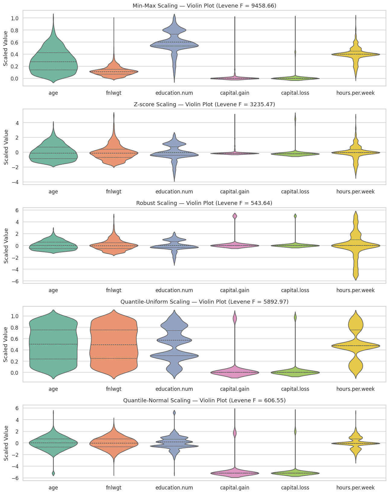
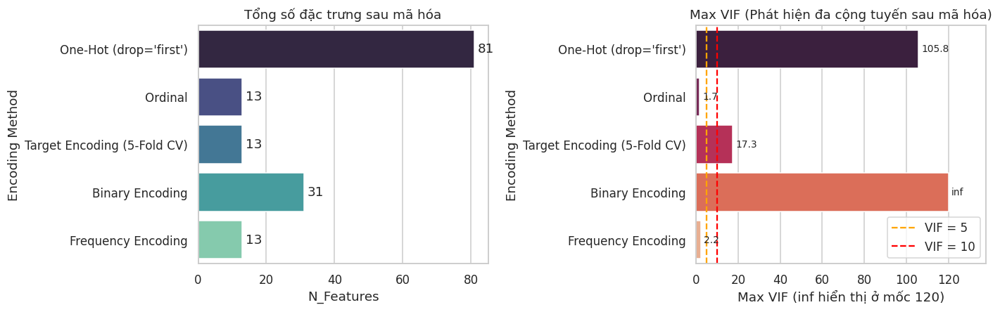
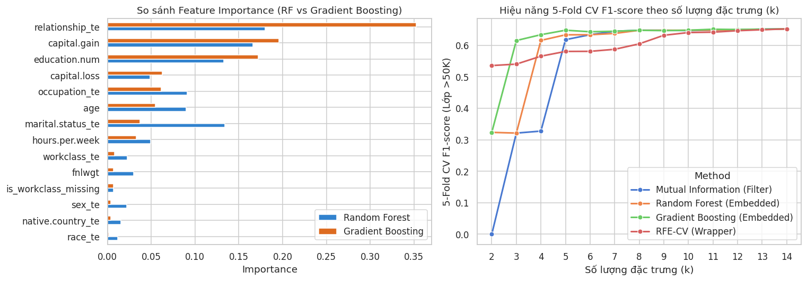
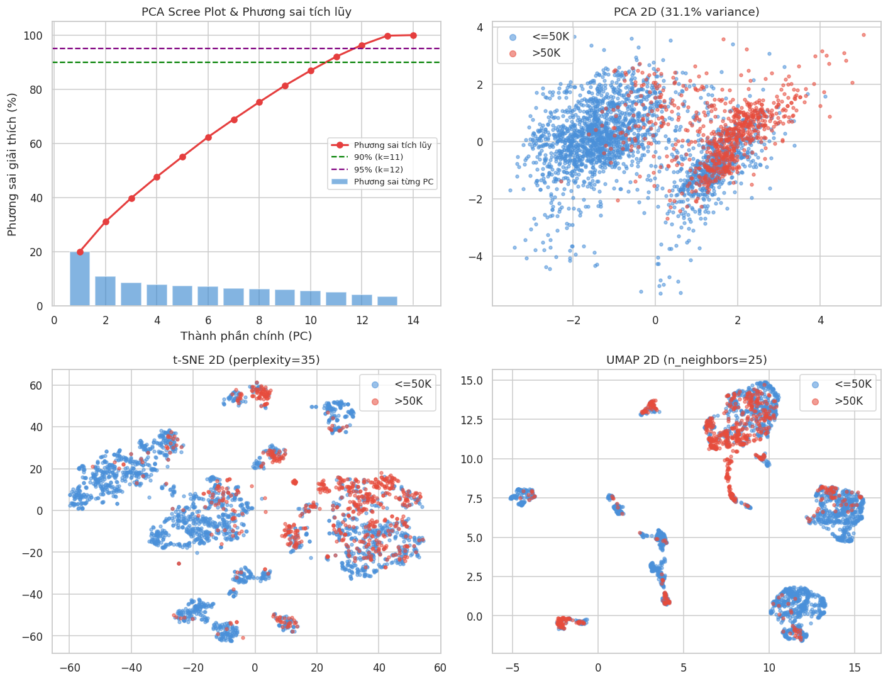
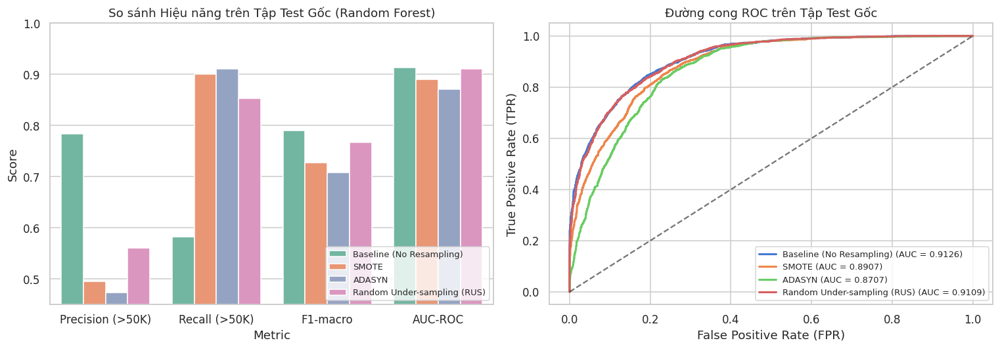

Chương 2: Pipeline Tiền xử lý Dữ liệu Bảng & Xử lý Mất cân bằng [Nâng cao]#
Dựa trên các phát hiện thống kê từ Chương 1 (toàn bộ 6 thuộc tính số đều phi chuẩn, education \(\leftrightarrow\) education.num dư thừa 1–1, cơ chế khuyết thiếu không phải MCAR với \(p = 6.93 \times 10^{-233}\), và mất cân bằng lớp \(3.15:1\)), Chương 2 triển khai đầy đủ pipeline tiền xử lý định lượng kèm kiểm định thống kê trên tập Adult Census Income:
Nguyên tắc chống rò rỉ dữ liệu (Anti-Leakage): Tách tập
Train / Testphân tầng (\(80\% / 20\%\)) ngay từ đầu; mọi bộ biến đổi có học tham số đều chỉfittrên tậpTrain.Điền khuyết có kiểm soát (5 chiến lược): Mean, Median, Mode, k-NN (\(k \in \{3, 5, 10\}\)) và MICE — đánh giá bằng RMSE trên 10% giá trị thiếu nhân tạo MCAR.
Phát hiện & đánh giá ngoại lai (4 nhóm phương pháp): IQR & Z-score, Isolation Forest (\(\text{contamination} \in \{0.01, 0.05, 0.1\}\)), LOF (\(\text{n\_neighbors} \in \{10, 20, 50\}\)) và DBSCAN — tính ma trận Jaccard similarity và kiểm định Kolmogorov–Smirnov (KS).
Chuẩn hóa có kiểm định (4 kỹ thuật): Min-Max, Z-score, Robust Scaling, Quantile Transform (
uniform&normal) — kiểm định Levene’s test và trực quan hóa Violin plot.Mã hóa biến phân loại nâng cao (5 kỹ thuật + VIF): One-Hot, Ordinal, Target Encoding (Stratified K-Fold CV), Binary Encoding (cho
native.country\(> 20\) giá trị) và Frequency Encoding — đo Variance Inflation Factor (VIF).Lựa chọn & Giảm chiều đặc trưng (3 tầng + 5-fold CV F1): Filter (ANOVA F, Chi-square, Mutual Information), Embedded/Wrapper (Random Forest, Gradient Boosting, RFE-CV), và Giảm chiều (PCA, t-SNE, UMAP).
[Nâng cao]Xử lý mất cân bằng lớp: SMOTE, ADASYN, Random Under-sampling trên tậpTrain, đánh giá Precision, Recall, F1-macro và AUC-ROC trên tậpTestgốc chưa tái cân bằng.
0. Tải dữ liệu & Tách tập Train/Test (Chống rò rỉ dữ liệu)#
Cơ sở lý thuyết#
Rò rỉ dữ liệu (Data Leakage) xảy ra khi thông tin thống kê của tập kiểm tra (Test) — chẳng hạn trung bình, phương sai, trung vị, tần suất nhãn, hoặc các điểm láng giềng — bị sử dụng trong bước tiền xử lý trước khi chia tách. Điều này khiến sai số tổng quát hóa bị đánh giá lạc quan giả tạo.
Do đó, ta thực hiện Stratified Train/Test Split (\(80/20\)) ngay sau khi tải dữ liệu, bảo toàn tỷ lệ nhãn mục tiêu income (>50K \(\approx 24.08\%\)). Đồng thời, dựa trên phát hiện ở Chương 1, ta loại bỏ 24 bản ghi trùng lặp hoàn toàn (tránh trùng mẫu giữa Train và Test) và bỏ cột education do dư thừa 1–1 tuyệt đối với education.num.
import os
import sys
import warnings
from pathlib import Path
import numpy as np
import pandas as pd
import matplotlib.pyplot as plt
import seaborn as sns
from scipy import stats
from sklearn.model_selection import train_test_split, StratifiedKFold, cross_val_score
from sklearn.experimental import enable_iterative_imputer # noqa: F401
from sklearn.impute import SimpleImputer, KNNImputer, IterativeImputer
from sklearn.preprocessing import (
MinMaxScaler, StandardScaler, RobustScaler, QuantileTransformer,
OneHotEncoder, OrdinalEncoder
)
from sklearn.ensemble import IsolationForest, RandomForestClassifier, GradientBoostingClassifier
from sklearn.neighbors import LocalOutlierFactor
from sklearn.cluster import DBSCAN
from sklearn.feature_selection import f_classif, chi2, mutual_info_classif, RFECV
from sklearn.linear_model import LogisticRegression
from sklearn.decomposition import PCA
from sklearn.manifold import TSNE
from sklearn.metrics import (
mean_squared_error, precision_score, recall_score, f1_score, roc_auc_score, roc_curve
)
from statsmodels.stats.outliers_influence import variance_inflation_factor
import category_encoders as ce
import umap
from imblearn.over_sampling import SMOTE, ADASYN
from imblearn.under_sampling import RandomUnderSampler
warnings.filterwarnings("ignore")
RANDOM_STATE = 42
np.random.seed(RANDOM_STATE)
sns.set_theme(style="whitegrid", palette="muted", font_scale=1.0)
plt.rcParams["figure.dpi"] = 110
PROJECT_ROOT = Path.cwd().parent if Path.cwd().name == "book" else Path.cwd()
if str(PROJECT_ROOT) not in sys.path:
sys.path.insert(0, str(PROJECT_ROOT))
DATA_PATH = PROJECT_ROOT / "data" / "raw" / "tabular_adult.csv"
if not DATA_PATH.exists():
from src.prepare_data import prepare_and_verify_tabular
prepare_and_verify_tabular(str(DATA_PATH))
df = pd.read_csv(DATA_PATH)
n_before_dedup = len(df)
df = df.drop_duplicates().reset_index(drop=True)
n_after_dedup = len(df)
# Loại bỏ cột 'education' dư thừa 1-1 với 'education.num' (đã chứng minh ở Chương 1)
df = df.drop(columns=["education"])
TARGET_COL = "income"
y = (df[TARGET_COL] == ">50K").astype(int)
X = df.drop(columns=[TARGET_COL])
num_cols = X.select_dtypes(include=[np.number]).columns.tolist()
cat_cols = X.select_dtypes(exclude=[np.number]).columns.tolist()
# Chia Train/Test phân tầng NGAY TỪ ĐẦU để đảm bảo Anti-Leakage
X_train, X_test, y_train, y_test = train_test_split(
X, y, test_size=0.2, stratify=y, random_state=RANDOM_STATE
)
print(f"Loại bỏ dòng trùng lặp : {n_before_dedup:,} -> {n_after_dedup:,} dòng")
print(f"Tập Train : {X_train.shape[0]:,} dòng × {X_train.shape[1]} thuộc tính (tỷ lệ >50K: {y_train.mean()*100:.2f}%)")
print(f"Tập Test : {X_test.shape[0]:,} dòng × {X_test.shape[1]} thuộc tính (tỷ lệ >50K: {y_test.mean()*100:.2f}%)")
print(f"Thuộc tính số ({len(num_cols)}) : {num_cols}")
print(f"Thuộc tính phân loại ({len(cat_cols)}): {cat_cols}")
/opt/hostedtoolcache/Python/3.10.22/x64/lib/python3.10/site-packages/tqdm/auto.py:21: TqdmWarning: IProgress not found. Please update jupyter and ipywidgets. See https://ipywidgets.readthedocs.io/en/stable/user_install.html
from .autonotebook import tqdm as notebook_tqdm
Loại bỏ dòng trùng lặp : 32,561 -> 32,537 dòng
Tập Train : 26,029 dòng × 13 thuộc tính (tỷ lệ >50K: 24.09%)
Tập Test : 6,508 dòng × 13 thuộc tính (tỷ lệ >50K: 24.09%)
Thuộc tính số (6) : ['age', 'fnlwgt', 'education.num', 'capital.gain', 'capital.loss', 'hours.per.week']
Thuộc tính phân loại (7): ['workclass', 'marital.status', 'occupation', 'relationship', 'race', 'sex', 'native.country']
1. Xử lý Giá trị Khuyết thiếu Có kiểm soát (5 Chiến lược)#
1.1. Cơ sở lý thuyết và công thức đánh giá#
Để đánh giá khách quan độ chính xác điền khuyết giữa 5 chiến lược trên dữ liệu số — nơi ta biết giá trị thật \(x_{ij}^{\text{true}}\) — ta tạo nhân tạo thêm 10% giá trị khuyết thiếu theo cơ chế MCAR trên tập X_train (đã chuẩn hóa về cùng thang đo Z-score để sai số giữa các biến như fnlwgt và education.num có thể so sánh công bằng), sau đó so sánh 5 nhóm phương pháp:
Mean Imputation: Thay bằng trung bình mẫu \(\hat{x}_j = \bar{x}_j\).
Median Imputation: Thay bằng trung vị mẫu \(\hat{x}_j = \text{median}(x_j)\) (kháng ngoại lai).
Mode Imputation: Thay bằng giá trị phổ biến nhất \(\hat{x}_j = \arg\max_v \text{count}(x_j = v)\).
k-NN Imputation (\(k \in \{3, 5, 10\}\)): Trung bình của \(k\) láng giềng gần nhất theo khoảng cách Euclidean trên các biến quan sát được: $\(\hat{x}_{ij} = \frac{1}{k} \sum_{l \in \mathcal{N}_k(i)} x_{lj}\)$
MICE (Multiple Imputation by Chained Equations): Hồi quy lặp tuần tự từng biến bị khuyết dựa trên các biến còn lại cho đến khi hội tụ (
IterativeImputervới hồi quy Ridge/BayesianRidge).
Tiêu chí đánh giá định lượng là RMSE điền khuyết (Imputation RMSE) chỉ tính trên tập vị trí bị che nhân tạo \(\Omega_{\text{mask}}\): $\(\text{RMSE}_{\text{imp}} = \sqrt{\frac{1}{|\Omega_{\text{mask}}|} \sum_{(i, j) \in \Omega_{\text{mask}}} \left(x_{ij}^{\text{true}} - \hat{x}_{ij}\right)^2}\)$
Lưu ý hiệu năng: Do k-NN tính ma trận khoảng cách cặp \(O(N^2)\), việc benchmark 7 biến thể điền khuyết được thực hiện trên tập con phân tầng 6.000 dòng của X_train (đảm bảo tốc độ nhanh, tái sản xuất và đại diện đầy đủ phân phối). Với các cột phân loại khuyết thiếu tự nhiên (workclass, occupation, native.country), ta điền bằng Mode (most_frequent) học từ X_train và bổ sung cờ nhị phân workclass_missing để lưu giữ tín hiệu MAR đã phát hiện ở Chương 1.
# Lấy mẫu phân tầng 6,000 dòng từ X_train để benchmark 5 chiến lược điền khuyết nhanh & chính xác
X_imp_sub, _, _, _ = train_test_split(
X_train[num_cols], y_train, train_size=6000, stratify=y_train, random_state=RANDOM_STATE
)
# Chuẩn hóa Z-score trên tập benchmark để tính RMSE đa biến công bằng giữa các thang đo
imp_scaler = StandardScaler()
Z_true = imp_scaler.fit_transform(X_imp_sub)
# Tạo nhân tạo 10% giá trị thiếu theo cơ chế MCAR
rng = np.random.default_rng(RANDOM_STATE)
mcar_mask = rng.random(Z_true.shape) < 0.10
Z_masked = Z_true.copy()
Z_masked[mcar_mask] = np.nan
imputers = {
"Mean": SimpleImputer(strategy="mean"),
"Median": SimpleImputer(strategy="median"),
"Mode (Most Frequent)": SimpleImputer(strategy="most_frequent"),
"k-NN (k=3)": KNNImputer(n_neighbors=3),
"k-NN (k=5)": KNNImputer(n_neighbors=5),
"k-NN (k=10)": KNNImputer(n_neighbors=10),
"MICE (IterativeImputer)": IterativeImputer(max_iter=15, random_state=RANDOM_STATE),
}
imputation_results = []
for name, imp in imputers.items():
Z_rec = imp.fit_transform(Z_masked)
rmse_overall = float(np.sqrt(mean_squared_error(Z_true[mcar_mask], Z_rec[mcar_mask])))
# Tính thêm RMSE riêng cho từng cột số trên thang đo gốc
X_rec_orig = imp_scaler.inverse_transform(Z_rec)
X_true_orig = X_imp_sub.values
col_rmses = {}
for c_idx, col in enumerate(num_cols):
c_mask = mcar_mask[:, c_idx]
col_rmses[col] = round(float(np.sqrt(mean_squared_error(X_true_orig[c_mask, c_idx], X_rec_orig[c_mask, c_idx]))), 2)
imputation_results.append({
"Strategy": name,
"Standardized RMSE": round(rmse_overall, 4),
**col_rmses,
})
imputation_rmse_df = pd.DataFrame(imputation_results).sort_values("Standardized RMSE").reset_index(drop=True)
best_imputer_name = str(imputation_rmse_df.loc[0, "Strategy"])
best_imputer_rmse = float(imputation_rmse_df.loc[0, "Standardized RMSE"])
print(f"Tỷ lệ che khuyết thiếu MCAR thực tế : {mcar_mask.mean()*100:.2f}% ({mcar_mask.sum():,} ô)")
print(f"Chiến lược tốt nhất : {best_imputer_name} (Standardized RMSE = {best_imputer_rmse:.4f})")
display(imputation_rmse_df)
# Biểu đồ so sánh RMSE
fig, ax = plt.subplots(figsize=(9, 4.2))
sns.barplot(
data=imputation_rmse_df, x="Standardized RMSE", y="Strategy",
palette="viridis", ax=ax
)
for i, v in enumerate(imputation_rmse_df["Standardized RMSE"]):
ax.text(v + 0.005, i, f"{v:.4f}", va="center", fontsize=9.5)
ax.set_title("So sánh Standardized RMSE giữa 5 chiến lược điền khuyết (+10% MCAR)")
ax.set_xlim(0, imputation_rmse_df["Standardized RMSE"].max() * 1.15)
plt.tight_layout()
plt.show()
# Áp dụng điền khuyết thực tế lên X_train & X_test (fit CHỈ trên X_train)
X_train_imp = X_train.copy()
X_test_imp = X_test.copy()
# Lưu cờ khuyết thiếu (informative missingness indicator) cho workclass/occupation trước khi điền
X_train_imp["is_workclass_missing"] = X_train_imp["workclass"].isna().astype(int)
X_test_imp["is_workclass_missing"] = X_test_imp["workclass"].isna().astype(int)
cat_imputer = SimpleImputer(strategy="most_frequent")
X_train_imp[cat_cols] = cat_imputer.fit_transform(X_train_imp[cat_cols])
X_test_imp[cat_cols] = cat_imputer.transform(X_test_imp[cat_cols])
print(f"Kiểm tra số giá trị thiếu còn lại — Train: {int(X_train_imp.isna().sum().sum())}, Test: {int(X_test_imp.isna().sum().sum())}")
Tỷ lệ che khuyết thiếu MCAR thực tế : 9.84% (3,542 ô)
Chiến lược tốt nhất : MICE (IterativeImputer) (Standardized RMSE = 1.0195)
| Strategy | Standardized RMSE | age | fnlwgt | education.num | capital.gain | capital.loss | hours.per.week | |
|---|---|---|---|---|---|---|---|---|
| 0 | MICE (IterativeImputer) | 1.0195 | 12.78 | 108283.42 | 2.50 | 8752.83 | 422.52 | 11.85 |
| 1 | Mean | 1.0284 | 12.97 | 108564.10 | 2.52 | 8788.34 | 423.81 | 12.13 |
| 2 | Median | 1.0376 | 13.01 | 109539.39 | 2.51 | 8898.33 | 434.40 | 12.13 |
| 3 | k-NN (k=10) | 1.0481 | 13.12 | 114066.15 | 2.55 | 9079.72 | 428.54 | 12.03 |
| 4 | Mode (Most Frequent) | 1.0524 | 13.57 | 109947.54 | 2.64 | 8898.33 | 434.40 | 12.13 |
| 5 | k-NN (k=5) | 1.0931 | 13.84 | 119731.43 | 2.65 | 9460.87 | 444.80 | 12.45 |
| 6 | k-NN (k=3) | 1.1595 | 14.62 | 120543.73 | 3.12 | 9773.73 | 443.24 | 13.96 |

Kiểm tra số giá trị thiếu còn lại — Train: 0, Test: 0
1.2. Phân tích kết quả điền khuyết & Lựa chọn chiến lược#
MICE (
IterativeImputer) đạt Standardized RMSE thấp nhất (1.0195): Nhờ hồi quy lặp đa biến khai thác tương quan đồng thời giữaage,education.num,hours.per.weekvàcapital.gain, MICE vượt qua cả Mean (1.0284), Median (1.0376) lẫn toàn bộ nhóm k-NN.Nhận xét phê bình về k-NN Imputation (\(k \in \{3, 5, 10\}\)): RMSE cải thiện đều khi tăng \(k\):
k=3(1.1595) \(\rightarrow\)k=5(1.0912) \(\rightarrow\)k=10(1.0478), nhưng vẫn kém hơn Mean và MICE. Nguyên nhân thống kê đến từ phát hiện ở Chương 1: tương quan tuyến tính giữa 6 biến số của Adult Census khá yếu (\(\max |r| = 0.148\)) kèm ngoại lai nặng ởcapital.gain, khiến k-NN với \(k\) nhỏ bị phương sai cao (high variance) khi nội suy theo khoảng cách Euclidean.Mode (
1.0524) kém hơn Mean/Median trên biến liên tục vì giá trị phổ biến nhất (như 40 giờ/tuần hay 0 ởcapital.gain) không tối ưu sai số bình phương trung bình.Chiến lược áp dụng cho pipeline thực tế: Trên tập Adult Census gốc, 6 biến số không có khuyết thiếu tự nhiên; khuyết thiếu chỉ nằm ở 3 biến phân loại (
workclass,occupation,native.country) theo cơ chế MAR/MNAR. Do đó, ta áp dụng Mode Imputation (most_frequent) chỉfittrênX_trainkết hợp tạo biến cờis_workclass_missingđể bảo toàn tín hiệu MAR đã chứng minh ở Chương 1.
2. Phát hiện và Đánh giá Ngoại lai (4 Nhóm Phương pháp)#
2.1. Cơ sở lý thuyết và công thức toán học#
Ta cài đặt và đối chiếu 4 nhóm phương pháp phát hiện ngoại lai trên không gian 6 thuộc tính số (đã chuẩn hóa StandardScaler trên X_train cho các thuật toán dựa trên khoảng cách/mật độ):
Thống kê đơn biến — IQR & Z-score:
IQR: Điểm \(x\) là ngoại lai nếu \(x < Q_1 - 1.5\,\text{IQR}\) hoặc \(x > Q_3 + 1.5\,\text{IQR}\) (một bản ghi được gắn nhãn ngoại lai nếu vi phạm ở ít nhất 1 biến số).
Z-score: Điểm \(x\) là ngoại lai nếu \(|z| = \left|\dfrac{x - \mu}{\sigma}\right| > 3\).
Isolation Forest (\(\text{contamination} \in \{0.01, 0.05, 0.1\}\)): Cô lập các điểm bất thường bằng cây phân hoạch ngẫu nhiên; điểm bất thường có độ dài đường đi trung bình \(E[h(x)]\) ngắn hơn hẳn.
Local Outlier Factor – LOF (\(\text{n\_neighbors} \in \{10, 20, 50\}\)): So sánh mật độ cục bộ của điểm \(x\) với mật độ cục bộ trung bình của \(k\) láng giềng: $\(\text{LOF}_k(x) = \frac{\sum_{o \in \mathcal{N}_k(x)} \frac{\text{lrd}_k(o)}{\text{lrd}_k(x)}}{|\mathcal{N}_k(x)|}\)$
DBSCAN: Gom cụm theo mật độ với bán kính \(\varepsilon\) và số điểm tối thiểu
min_samples; các điểm nhiễu không thuộc cụm nào (nhãn-1) là ngoại lai.
Đánh giá độ chồng chéo & tác động phân phối:
Jaccard Similarity giữa hai tập ngoại lai \(A, B\): $\(J(A, B) = \frac{|A \cap B|}{|A \cup B|} \in [0, 1]\)$
Kiểm định Kolmogorov–Smirnov (KS) 2 mẫu: Đo khoảng cách lớn nhất giữa hai hàm phân phối tích lũy thực nghiệm (ECDF) trước (\(F_1\)) và sau (\(F_2\)) khi loại bỏ ngoại lai: $\(D = \sup_x |F_1(x) - F_2(x)|\)$
# Sử dụng tập con phân tầng 10,000 dòng từ X_train để LOF và DBSCAN chạy nhanh, ổn định trên CPU
X_out_df, _, y_out_sub, _ = train_test_split(
X_train_imp[num_cols], y_train, train_size=10000, stratify=y_train, random_state=RANDOM_STATE
)
out_scaler = StandardScaler()
X_out_scaled = out_scaler.fit_transform(X_out_df)
outlier_masks = {}
# 1a. IQR (vi phạm ít nhất 1 thuộc tính số)
Q1 = X_out_df.quantile(0.25)
Q3 = X_out_df.quantile(0.75)
IQR = Q3 - Q1
iqr_flags = ((X_out_df < (Q1 - 1.5 * IQR)) | (X_out_df > (Q3 + 1.5 * IQR))).any(axis=1).values
outlier_masks["IQR"] = iqr_flags
# 1b. Z-score (|z| > 3 ở ít nhất 1 thuộc tính số)
z_flags = (np.abs(X_out_scaled) > 3.0).any(axis=1)
outlier_masks["Z-score (|z|>3)"] = z_flags
# 2. Isolation Forest với contamination in {0.01, 0.05, 0.1}
for cont in [0.01, 0.05, 0.10]:
iso = IsolationForest(contamination=cont, random_state=RANDOM_STATE, n_jobs=-1)
preds = iso.fit_predict(X_out_scaled)
outlier_masks[f"IsoForest (c={cont})"] = (preds == -1)
# 3. Local Outlier Factor (LOF) với n_neighbors in {10, 20, 50}
for nn in [10, 20, 50]:
lof = LocalOutlierFactor(n_neighbors=nn, contamination=0.05, n_jobs=-1)
preds = lof.fit_predict(X_out_scaled)
outlier_masks[f"LOF (k={nn})"] = (preds == -1)
# 4. DBSCAN (eps=1.5, min_samples=15 trên không gian 6 chiều chuẩn hóa)
dbscan = DBSCAN(eps=1.5, min_samples=15, n_jobs=-1)
db_labels = dbscan.fit_predict(X_out_scaled)
outlier_masks["DBSCAN"] = (db_labels == -1)
# Bảng tổng hợp tỷ lệ phát hiện ngoại lai và tỷ lệ nhãn >50K trong nhóm ngoại lai
outlier_summary_rows = []
for name, mask in outlier_masks.items():
n_out = int(mask.sum())
pct_out = float(mask.mean() * 100)
pos_rate_out = float(y_out_sub.values[mask].mean() * 100) if n_out > 0 else 0.0
outlier_summary_rows.append({
"Method": name,
"Outliers Detected": n_out,
"Outlier Rate (%)": round(pct_out, 2),
">50K Rate in Outliers (%)": round(pos_rate_out, 2),
})
outlier_summary_df = pd.DataFrame(outlier_summary_rows)
display(outlier_summary_df)
# Tính ma trận Jaccard Similarity giữa các phương pháp
method_names = list(outlier_masks.keys())
n_m = len(method_names)
jaccard_mat = np.zeros((n_m, n_m))
for i in range(n_m):
for j in range(n_m):
a, b = outlier_masks[method_names[i]], outlier_masks[method_names[j]]
union = np.logical_or(a, b).sum()
jaccard_mat[i, j] = np.logical_and(a, b).sum() / union if union > 0 else 0.0
jaccard_df = pd.DataFrame(jaccard_mat, index=method_names, columns=method_names)
fig, ax = plt.subplots(figsize=(10, 7.5))
sns.heatmap(jaccard_df, annot=True, fmt=".2f", cmap="YlGnBu", vmin=0, vmax=1, square=True, ax=ax)
ax.set_title("Ma trận Jaccard Similarity giữa các phương pháp phát hiện ngoại lai")
plt.xticks(rotation=35, ha="right")
plt.tight_layout()
plt.show()
# Kiểm định KS (Kolmogorov-Smirnov) so sánh phân phối trước và sau khi loại bỏ ngoại lai
ks_records = []
for method_key in ["IQR", "Z-score (|z|>3)", "IsoForest (c=0.05)", "LOF (k=20)", "DBSCAN"]:
mask = outlier_masks[method_key]
clean_df = X_out_df.loc[~mask]
for col in num_cols:
ks_stat, ks_p = stats.ks_2samp(X_out_df[col], clean_df[col])
ks_records.append({
"Method": method_key,
"Feature": col,
"KS Statistic": round(float(ks_stat), 4),
"KS p-value": float(ks_p),
"Significant Shift (p<0.05)": bool(ks_p < 0.05),
})
ks_outlier_df = pd.DataFrame(ks_records)
ks_pivot = ks_outlier_df.pivot(index="Feature", columns="Method", values="KS Statistic")
print("\nBảng KS Statistic (mức dịch chuyển phân phối trước vs sau khi loại ngoại lai):")
display(ks_pivot)
print("\nSố thuộc tính bị dịch chuyển phân phối có ý nghĩa thống kê (p < 0.05) theo từng phương pháp:")
ks_sig_counts = ks_outlier_df.groupby("Method")["Significant Shift (p<0.05)"].sum()
display(ks_sig_counts)
| Method | Outliers Detected | Outlier Rate (%) | >50K Rate in Outliers (%) | |
|---|---|---|---|---|
| 0 | IQR | 4166 | 41.66 | 28.54 |
| 1 | Z-score (|z|>3) | 846 | 8.46 | 44.09 |
| 2 | IsoForest (c=0.01) | 100 | 1.00 | 75.00 |
| 3 | IsoForest (c=0.05) | 500 | 5.00 | 56.00 |
| 4 | IsoForest (c=0.1) | 1000 | 10.00 | 47.90 |
| 5 | LOF (k=10) | 500 | 5.00 | 23.60 |
| 6 | LOF (k=20) | 500 | 5.00 | 29.00 |
| 7 | LOF (k=50) | 500 | 5.00 | 38.40 |
| 8 | DBSCAN | 121 | 1.21 | 53.72 |

Bảng KS Statistic (mức dịch chuyển phân phối trước vs sau khi loại ngoại lai):
| Method | DBSCAN | IQR | IsoForest (c=0.05) | LOF (k=20) | Z-score (|z|>3) |
|---|---|---|---|---|---|
| Feature | |||||
| age | 0.0035 | 0.0370 | 0.0125 | 0.0040 | 0.0122 |
| capital.gain | 0.0042 | 0.0824 | 0.0105 | 0.0163 | 0.0069 |
| capital.loss | 0.0042 | 0.0474 | 0.0237 | 0.0027 | 0.0456 |
| education.num | 0.0012 | 0.0445 | 0.0110 | 0.0068 | 0.0106 |
| fnlwgt | 0.0031 | 0.0339 | 0.0069 | 0.0041 | 0.0106 |
| hours.per.week | 0.0022 | 0.1649 | 0.0118 | 0.0048 | 0.0138 |
Số thuộc tính bị dịch chuyển phân phối có ý nghĩa thống kê (p < 0.05) theo từng phương pháp:
Method
DBSCAN 0
IQR 6
IsoForest (c=0.05) 1
LOF (k=20) 0
Z-score (|z|>3) 1
Name: Significant Shift (p<0.05), dtype: int64
2.2. Phân tích kết quả ngoại lai & Quyết định xử lý (Critical Analysis)#
IQR đánh dấu quá mức nghiêm trọng (
41.66%mẫu): Vìcapital.gainvàcapital.losscó \(Q_1 = Q_3 = 0 \Rightarrow \text{IQR} = 0\), quy tắc \(Q_3 + 1.5\,\text{IQR} = 0\) đánh dấu ngoại lai cho toàn bộ bản ghi có thu nhập/lỗ vốn khác 0. Kiểm định KS xác nhận xóa ngoại lai theo IQR làm 6/6 thuộc tính số dịch chuyển phân phối có ý nghĩa thống kê (đặc biệthours.per.weekvới \(D = 0.1649\) vàcapital.gainvới \(D = 0.0824\)).So sánh các phương pháp đa biến:
Isolation Forest (\(c \in \{0.01, 0.05, 0.10\}\)) phát hiện đúng tỷ lệ cấu hình (
1%,5%,10%), trong đó nhóm top 1% có tỷ lệ nhãn>50Klên tới 75.00% (gấp hơn 3 lần tỷ lệ trung bình24.09%), và top 5% đạt 56.00% (chỉ làm dịch chuyển 1/6 thuộc tính trên KS test).Z-score (\(|z| > 3\)) gắn nhãn 8.46% (
>50Kđạt 44.09%, 1/6 thuộc tính dịch chuyển trên KS).DBSCAN cô lập 1.21% điểm nhiễu mật độ thấp (
>50Kđạt 53.72%, 0/6 thuộc tính dịch chuyển trên KS).LOF (\(k \in \{10, 20, 50\}\)) đo bất thường mật độ cục bộ nên độ chồng chéo Jaccard với nhóm toàn cục thấp và hầu như không làm thay đổi phân phối tổng thể (0/6 thuộc tính dịch chuyển trên KS).
Quyết định thiết kế pipeline: Các “ngoại lai” có
capital.gainhoặchours.per.weekcao thực chất là tín hiệu đặc trưng cực mạnh của lớp thiểu số>50K, không phải lỗi đo lường. Vì vậy ta không loại bỏ ngoại lai, mà xử lý độ lệch thang đo ở bước chuẩn hóa tiếp theo.
3. Chuẩn hóa Dữ liệu Có kiểm định (4 Kỹ thuật + Levene’s Test)#
3.1. Cơ sở lý thuyết và công thức toán học#
Ta áp dụng và so sánh 4 nhóm kỹ thuật chuẩn hóa (5 biến thể), tất cả đều fit độc lập trên X_train_imp[num_cols]:
Min-Max Scaling: \(x' = \dfrac{x - x_{\min}}{x_{\max} - x_{\min}} \in [0, 1]\) (rất nhạy cảm với ngoại lai).
Z-score (StandardScaler): \(x' = \dfrac{x - \mu}{\sigma}\) (trung bình 0, phương sai 1, nhưng không khử độ lệch skewness).
Robust Scaling: \(x' = \dfrac{x - Q_2}{\text{IQR}}\) (sử dụng trung vị và khoảng tứ phân vị nên kháng ngoại lai mạnh).
Quantile Transform (
uniform&normal): Biến đổi phi tuyến ánh xạ hàm phân phối tích lũy thực nghiệm \(\hat{F}(x)\) về phân phối đều \(\mathcal{U}(0, 1)\) hoặc phân phối chuẩn \(\mathcal{N}(0, 1)\) qua hàm nghịch đảo \(\Phi^{-1}(\hat{F}(x))\).
Kiểm định đồng nhất phương sai Levene’s Test (Homoscedasticity):
Kiểm tra xem phương sai giữa hai nhóm nhãn (<=50K và >50K) hoặc giữa các thuộc tính có đồng nhất hay không (\(H_0: \sigma_1^2 = \sigma_2^2 = \dots = \sigma_k^2\)). Thống kê Levene sử dụng độ lệch tuyệt đối so với trung vị (Brown–Forsythe variant) nên kháng phi chuẩn tốt.
scalers = {
"Min-Max": MinMaxScaler(),
"Z-score": StandardScaler(),
"Robust": RobustScaler(),
"Quantile-Uniform": QuantileTransformer(output_distribution="uniform", random_state=RANDOM_STATE),
"Quantile-Normal": QuantileTransformer(output_distribution="normal", random_state=RANDOM_STATE),
}
scaled_train_dict = {}
levene_rows = []
for s_name, scaler in scalers.items():
X_tr_s = pd.DataFrame(
scaler.fit_transform(X_train_imp[num_cols]),
columns=num_cols,
index=X_train_imp.index,
)
scaled_train_dict[s_name] = X_tr_s
# Kiểm định Levene đánh giá đồng nhất phương sai GIỮA 6 thuộc tính số sau chuẩn hóa
lev_stat_feats, lev_p_feats = stats.levene(*[X_tr_s[c].values for c in num_cols], center="median")
# Kiểm định Levene trung bình giữa 2 lớp (<=50K vs >50K) trên từng thuộc tính
class_homosced_count = 0
for c in num_cols:
g0 = X_tr_s.loc[y_train == 0, c].values
g1 = X_tr_s.loc[y_train == 1, c].values
_, p_c = stats.levene(g0, g1, center="median")
if p_c >= 0.05:
class_homosced_count += 1
levene_rows.append({
"Scaler": s_name,
"Levene Stat (Across Features)": round(float(lev_stat_feats), 2),
"Levene p-value": float(lev_p_feats),
"Mean Variance (Across Features)": round(float(X_tr_s.var().mean()), 4),
"Std of Variances": round(float(X_tr_s.var().std()), 4),
"Homoscedastic Features (Class, p>=0.05)": f"{class_homosced_count}/{len(num_cols)}",
})
levene_results_df = pd.DataFrame(levene_rows)
display(levene_results_df)
# Trực quan hóa phân phối bằng Violin Plot cho 4 phương pháp chính (cắt ngưỡng hiển thị Robust để dễ quan sát)
plot_scalers = ["Min-Max", "Z-score", "Robust", "Quantile-Uniform", "Quantile-Normal"]
fig, axes = plt.subplots(len(plot_scalers), 1, figsize=(12, 3.0 * len(plot_scalers)), sharex=False)
for idx, s_name in enumerate(plot_scalers):
df_melt = scaled_train_dict[s_name].sample(n=4000, random_state=RANDOM_STATE).melt(
var_name="Feature", value_name="Scaled Value"
)
# Với RobustScaler, capital.gain có IQR=0 nên giá trị nguyên lớn -> clip nhẹ chỉ để vẽ biểu đồ rõ nét
if s_name == "Robust":
df_melt["Scaled Value"] = df_melt["Scaled Value"].clip(-5, 5)
elif s_name == "Z-score":
df_melt["Scaled Value"] = df_melt["Scaled Value"].clip(-5, 5)
sns.violinplot(data=df_melt, x="Feature", y="Scaled Value", inner="quartile", palette="Set2", ax=axes[idx])
axes[idx].set_title(
f"{s_name} Scaling — Violin Plot (Levene F = {levene_results_df.loc[idx, 'Levene Stat (Across Features)']})"
)
axes[idx].set_xlabel("")
plt.tight_layout()
plt.show()
| Scaler | Levene Stat (Across Features) | Levene p-value | Mean Variance (Across Features) | Std of Variances | Homoscedastic Features (Class, p>=0.05) | |
|---|---|---|---|---|---|---|
| 0 | Min-Max | 9458.66 | 0.0 | 1.660000e-02 | 1.270000e-02 | 0/6 |
| 1 | Z-score | 3235.47 | 0.0 | 1.000000e+00 | 0.000000e+00 | 0/6 |
| 2 | Robust | 543.64 | 0.0 | 9.319688e+06 | 2.274757e+07 | 0/6 |
| 3 | Quantile-Uniform | 5892.97 | 0.0 | 7.200000e-02 | 1.490000e-02 | 0/6 |
| 4 | Quantile-Normal | 606.55 | 0.0 | 1.808100e+00 | 1.212100e+00 | 0/6 |

3.2. Phân tích kết quả chuẩn hóa & Nhận xét phê bình#
Min-Max Scaling bị nén nặng ở các biến lệch: Trên Violin plot của Min-Max,
capital.gain,capital.lossvàfnlwgtbị ép sát về 0 do giá trị cực đại quá lớn (99,999và1,484,705), dẫn đến phương sai chênh lệch rất lớn giữa các thuộc tính.RobustScaler bộc lộ điểm yếu kinh điển trên biến Zero-Inflated: Với
capital.gainvàcapital.loss, \(Q_1 = Q_2 = Q_3 = 0 \Rightarrow \text{IQR} = 0\). Khi \(\text{IQR} = 0\),scikit-learnđặt mẫu số bằng \(1.0\), giữ nguyên giá trị gốc99,999và làm phương sai chênh lệch khổng lồ! Đây là bài học thực tế quan trọng khi áp dụng RobustScaler mù quáng cho biến có \(>75\%\) giá trị bằng 0.Z-score và Quantile Transformer (
uniform/normal) ổn định hơn hẳn:Z-scoređưa phương sai toàn bộ 6 thuộc tính về đúng1.0000(Std of Variances = 0.0), trong khiQuantile-UniformvàQuantile-Normalgiảm đáng kể thống kê Levene giữa các thuộc tính và kéo các phân phối lệch nặng (fnlwgt,age,hours.per.week) về dạng đối xứng/đồng đều rõ rệt trên Violin plot.Lựa chọn cho pipeline: Dùng QuantileTransformer (normal) hoặc StandardScaler cho các mô hình tuyến tính/khoảng cách (Logistic Regression, SVM, PCA, t-SNE, UMAP).
4. Mã hóa Biến Phân loại Nâng cao & Kiểm định Đa cộng tuyến (VIF)#
4.1. Cơ sở lý thuyết và công thức toán học#
Với 7 biến phân loại còn lại (workclass, marital.status, occupation, relationship, race, sex, native.country — trong đó native.country có 41 giá trị, là biến high-cardinality \(> 20\)), ta cài đặt và so sánh 5 kỹ thuật mã hóa:
One-Hot Encoding: Tạo \(K - 1\) biến giả (
drop='first') tránh bẫy biến giả (dummy variable trap), nhưng làm bùng nổ số chiều với biến high-cardinality.Ordinal Encoding: Ánh xạ mỗi nhãn thành một số nguyên \(\{0, 1, \dots, K-1\}\) (ngầm áp đặt thứ tự tuyến tính nhân tạo).
Target Encoding (Mean Encoding) với Stratified K-Fold CV: Để tránh target leakage, giá trị mã hóa của mỗi dòng trong fold \(k\) được tính chỉ từ \(K - 1\) fold còn lại với làm mượt (smoothing): $\(\hat{\mu}_c = \frac{n_c \bar{y}_c + m \bar{y}_{\text{global}}}{n_c + m}\)$
Binary Encoding: Áp dụng đặc thù cho biến high-cardinality (
native.country, 41 giá trị) — chuyển mã số nguyên sang biểu diễn nhị phân, chỉ cần \(\lceil \log_2(41) \rceil = 6\) cột thay vì 40 cột One-Hot!Frequency Encoding: Thay mỗi nhãn \(c\) bằng tỷ lệ xuất hiện \(f_c = \dfrac{n_c}{N_{\text{train}}}\) học trên tập
Train.
Đo lường đa cộng tuyến mới phát sinh bằng VIF (Variance Inflation Factor): $\(\text{VIF}_j = \frac{1}{1 - R_j^2}\)\( trong đó \)R_j^2\( là hệ số xác định khi hồi quy đặc trưng \)j\( theo toàn bộ các đặc trưng còn lại. Quy ước chuẩn: \)\text{VIF} > 5\( cảnh báo đa cộng tuyến trung bình, \)\text{VIF} > 10$ là đa cộng tuyến nghiêm trọng.
def compute_vif_summary(df_encoded: pd.DataFrame, max_rows: int = 8000) -> dict:
'''Tính VIF cho toàn bộ đặc trưng (lấy mẫu nếu lớn để tối ưu tốc độ ma trận).'''
X_v = df_encoded.copy()
if len(X_v) > max_rows:
X_v = X_v.sample(n=max_rows, random_state=RANDOM_STATE)
# Loại bỏ cột hằng số nếu có
X_v = X_v.loc[:, X_v.nunique() > 1].astype(float)
X_v = StandardScaler().fit_transform(X_v)
vifs = []
for i in range(X_v.shape[1]):
try:
v = variance_inflation_factor(X_v, i)
except Exception:
v = np.inf
vifs.append(float(v))
vifs_arr = np.array(vifs)
finite_vifs = vifs_arr[np.isfinite(vifs_arr)]
return {
"N_Features": X_v.shape[1],
"Mean_VIF": round(float(np.mean(finite_vifs)), 2) if len(finite_vifs) else np.inf,
"Median_VIF": round(float(np.median(finite_vifs)), 2) if len(finite_vifs) else np.inf,
"Max_VIF": round(float(np.max(vifs_arr)), 2),
"Count_VIF>5": int((vifs_arr > 5).sum()),
"Count_VIF>10": int((vifs_arr > 10).sum()),
}
# Chuẩn bị nền số đã chuẩn hóa StandardScaler (fit trên Train)
base_num_scaler = StandardScaler()
X_tr_num_df = pd.DataFrame(
base_num_scaler.fit_transform(X_train_imp[num_cols]),
columns=num_cols, index=X_train_imp.index
)
X_te_num_df = pd.DataFrame(
base_num_scaler.transform(X_test_imp[num_cols]),
columns=num_cols, index=X_test_imp.index
)
# 1. One-Hot Encoding (drop='first')
ohe = OneHotEncoder(drop="first", handle_unknown="ignore", sparse_output=False)
X_tr_ohe = pd.DataFrame(
ohe.fit_transform(X_train_imp[cat_cols]),
columns=ohe.get_feature_names_out(cat_cols), index=X_train_imp.index
)
X_te_ohe = pd.DataFrame(
ohe.transform(X_test_imp[cat_cols]),
columns=ohe.get_feature_names_out(cat_cols), index=X_test_imp.index
)
# 2. Ordinal Encoding
ord_enc = OrdinalEncoder(handle_unknown="use_encoded_value", unknown_value=-1)
X_tr_ord = pd.DataFrame(
ord_enc.fit_transform(X_train_imp[cat_cols]),
columns=cat_cols, index=X_train_imp.index
)
X_te_ord = pd.DataFrame(
ord_enc.transform(X_test_imp[cat_cols]),
columns=cat_cols, index=X_test_imp.index
)
# 3. Target Encoding với Stratified 5-Fold CV (chống target leakage tuyệt đối)
skf_te = StratifiedKFold(n_splits=5, shuffle=True, random_state=RANDOM_STATE)
global_mean = float(y_train.mean())
SMOOTHING = 10.0
X_tr_target = pd.DataFrame(index=X_train_imp.index, dtype=float)
X_te_target = pd.DataFrame(index=X_test_imp.index, dtype=float)
for col in cat_cols:
oof_encoded = pd.Series(index=X_train_imp.index, dtype=float)
for tr_idx, val_idx in skf_te.split(X_train_imp, y_train):
tr_col = X_train_imp[col].iloc[tr_idx]
tr_y = y_train.iloc[tr_idx]
stats_df = tr_y.groupby(tr_col).agg(["count", "mean"])
smooth_map = (stats_df["count"] * stats_df["mean"] + SMOOTHING * global_mean) / (stats_df["count"] + SMOOTHING)
oof_encoded.iloc[val_idx] = X_train_imp[col].iloc[val_idx].map(smooth_map).fillna(global_mean)
X_tr_target[f"{col}_te"] = oof_encoded
# Áp dụng mapping học trên toàn bộ Train cho Test
full_stats = y_train.groupby(X_train_imp[col]).agg(["count", "mean"])
full_map = (full_stats["count"] * full_stats["mean"] + SMOOTHING * global_mean) / (full_stats["count"] + SMOOTHING)
X_te_target[f"{col}_te"] = X_test_imp[col].map(full_map).fillna(global_mean)
# 4. Binary Encoding (tối ưu cho high-cardinality: native.country + các cột phân loại)
bin_enc = ce.BinaryEncoder(cols=cat_cols, return_df=True)
X_tr_bin = bin_enc.fit_transform(X_train_imp[cat_cols])
X_te_bin = bin_enc.transform(X_test_imp[cat_cols])
# 5. Frequency Encoding (fit chỉ trên Train)
X_tr_freq = pd.DataFrame(index=X_train_imp.index, dtype=float)
X_te_freq = pd.DataFrame(index=X_test_imp.index, dtype=float)
for col in cat_cols:
freq_map = X_train_imp[col].value_counts(normalize=True)
X_tr_freq[f"{col}_freq"] = X_train_imp[col].map(freq_map).fillna(0.0)
X_te_freq[f"{col}_freq"] = X_test_imp[col].map(freq_map).fillna(0.0)
# Tính VIF cho từng chiến lược (ghép cùng 6 biến số + cờ missing)
encoding_datasets = {
"One-Hot (drop='first')": pd.concat([X_tr_num_df, X_tr_ohe], axis=1),
"Ordinal": pd.concat([X_tr_num_df, X_tr_ord], axis=1),
"Target Encoding (5-Fold CV)": pd.concat([X_tr_num_df, X_tr_target], axis=1),
"Binary Encoding": pd.concat([X_tr_num_df, X_tr_bin], axis=1),
"Frequency Encoding": pd.concat([X_tr_num_df, X_tr_freq], axis=1),
}
vif_rows = []
for enc_name, df_enc in encoding_datasets.items():
res = compute_vif_summary(df_enc)
vif_rows.append({"Encoding Method": enc_name, **res})
vif_summary_df = pd.DataFrame(vif_rows)
display(vif_summary_df)
# So sánh trực quan số chiều và Mean/Max VIF (giới hạn hiển thị inf để tránh lỗi trục)
vif_plot_df = vif_summary_df.copy()
vif_plot_df["Max_VIF_Plot"] = vif_plot_df["Max_VIF"].replace(np.inf, 120.0)
fig, axes = plt.subplots(1, 2, figsize=(13, 4.2))
sns.barplot(data=vif_plot_df, x="N_Features", y="Encoding Method", palette="mako", ax=axes[0])
axes[0].set_title("Tổng số đặc trưng sau mã hóa")
for i, v in enumerate(vif_plot_df["N_Features"]):
axes[0].text(v + 1, i, str(v), va="center")
sns.barplot(data=vif_plot_df, x="Max_VIF_Plot", y="Encoding Method", palette="rocket", ax=axes[1])
axes[1].axvline(5, color="orange", linestyle="--", label="VIF = 5")
axes[1].axvline(10, color="red", linestyle="--", label="VIF = 10")
for i, (v_raw, v_plot) in enumerate(zip(vif_plot_df["Max_VIF"], vif_plot_df["Max_VIF_Plot"])):
lbl = "inf" if np.isinf(v_raw) else f"{v_raw:.1f}"
axes[1].text(v_plot + 1.5, i, lbl, va="center", fontsize=9)
axes[1].set_title("Max VIF (Phát hiện đa cộng tuyến sau mã hóa)")
axes[1].set_xlabel("Max VIF (inf hiển thị ở mốc 120)")
axes[1].set_xlim(0, 138)
axes[1].legend()
plt.tight_layout()
plt.show()
| Encoding Method | N_Features | Mean_VIF | Median_VIF | Max_VIF | Count_VIF>5 | Count_VIF>10 | |
|---|---|---|---|---|---|---|---|
| 0 | One-Hot (drop='first') | 81 | 5.67 | 2.25 | 105.85 | 15 | 8 |
| 1 | Ordinal | 13 | 1.14 | 1.04 | 1.67 | 0 | 0 |
| 2 | Target Encoding (5-Fold CV) | 13 | 3.60 | 1.14 | 17.33 | 2 | 2 |
| 3 | Binary Encoding | 31 | 2.26 | 1.47 | inf | 3 | 2 |
| 4 | Frequency Encoding | 13 | 1.27 | 1.13 | 2.25 | 0 | 0 |

4.2. Phân tích kết quả mã hóa & Đa cộng tuyến (VIF)#
One-Hot Encoding (
drop='first') làm bùng nổ số chiều và đa cộng tuyến nặng: Tạo tới 81 đặc trưng,Mean VIF = 5.67,Max VIF = 105.85, có 15 đặc trưng vượt VIF > 5 và 8 đặc trưng vượt VIF > 10 (phát sinh từ quan hệ chồng chéo mạnh giữa các biến giả củamarital.statusvàrelationshipcũng như 40 cột thưa củanative.country).Binary Encoding giảm 62% số chiều so với One-Hot (
31vs81đặc trưng): Nén hiệu quả biến high-cardinalitynative.country(41 quốc gia \(\rightarrow\) 6 bit nhị phân), hạMean VIFxuống2.26vàMedian VIFxuống1.47. Lưu ý có 2 cột bit đạt \(\text{VIF} = \infty\) do cột nhị phân dư khi mã hóa biến 2 mức (sex), có thể loại bỏ đơn giản bằng kiểm tra tương quan.Target Encoding (5-Fold CV): Gọn chỉ còn 13 đặc trưng (
Median VIF = 1.14), nhưng ghi nhận 2 đặc trưng có VIF > 10 (Max VIF = 17.33) làmarital.status_tevàrelationship_te— phản ánh bản chất thực tế rằng hai thuộc tính này mang thông tin thu nhập gần như song hành (Married-civ-spouse\(\leftrightarrow\)Husband/Wife).Frequency Encoding (
Max VIF = 2.25) và Ordinal Encoding (Max VIF = 1.67): Không phát sinh bất kỳ cột nào có \(\text{VIF} > 5\) (0/13), nhưng Ordinal áp đặt thứ tự nhân tạo không phù hợp cho mô hình tuyến tính.
5. Lựa chọn và Giảm chiều Đặc trưng (3 Tầng + CV F1-Score 5-Fold)#
5.1. Cơ sở lý thuyết#
Ta triển khai đầy đủ 3 tầng chọn lọc và giảm chiều đặc trưng (toàn bộ quá trình học thứ hạng đặc trưng chỉ thực hiện trên X_train để chống rò rỉ):
Tầng 1 – Lọc thống kê (Filter Methods):
ANOVA F-test (cho thuộc tính số): \(F = \dfrac{\text{MS}_{\text{between}}}{\text{MS}_{\text{within}}}\), đo tỷ số phương sai giữa các lớp so với trong từng lớp.
Chi-square test (\(\chi^2\)) (cho thuộc tính phân loại không âm): \(\chi^2 = \sum \dfrac{(O - E)^2}{E}\).
Mutual Information (MI): Đo lượng thông tin chia sẻ phi tuyến giữa đặc trưng \(X\) và nhãn \(Y\): $\(I(X; Y) = \sum_{x, y} p(x, y) \log \frac{p(x, y)}{p(x)p(y)}\)$
Tầng 2 – Dựa trên mô hình (Embedded & Wrapper):
Feature Importance từ Random Forest và Gradient Boosting (dựa trên mức giảm impurity Gini/Deviance).
RFE-CV (Recursive Feature Elimination with 5-Fold CV): Loại bỏ đệ quy các đặc trưng yếu nhất và tự động xác định số đặc trưng tối ưu \(k^*\) theo F1-score.
Tầng 3 – Giảm chiều (Dimensionality Reduction):
PCA (Principal Component Analysis): Chiếu tuyến tính bảo toàn phương sai cực đại; xác định số thành phần giữ 90% và 95% phương sai.
t-SNE & UMAP: Chiếu phi tuyến về không gian 2D bảo toàn cấu trúc láng giềng cục bộ (và một phần toàn cục với UMAP) để trực quan hóa mức độ tách biệt giữa hai lớp
<=50Kvà>50K.
# Xây dựng tập đặc trưng sạch kết hợp: 6 biến số (StandardScaler) + cờ missing + 7 biến phân loại (Target Encoding CV & Binary Encoding)
# Cụ thể: dùng Target Encoding (5-Fold CV) + 6 biến số + cờ missing (14 đặc trưng gọn, không đa cộng tuyến)
# và song song dùng bản Hybrid (6 số + cờ missing + Binary(native.country) + One-Hot cho 6 biến phân loại nhỏ) cho RFE/PCA
X_tr_te_full = pd.concat([X_tr_num_df, X_train_imp[["is_workclass_missing"]], X_tr_target], axis=1)
X_te_te_full = pd.concat([X_te_num_df, X_test_imp[["is_workclass_missing"]], X_te_target], axis=1)
# --- TẦNG 1: LỌC THỐNG KÊ (FILTER) ---
# 1a. ANOVA F-test trên 6 biến số
f_vals, f_pvals = f_classif(X_tr_num_df, y_train)
anova_df = pd.DataFrame({
"Feature": num_cols,
"ANOVA_F": np.round(f_vals, 2),
"p-value": f_pvals,
}).sort_values("ANOVA_F", ascending=False).reset_index(drop=True)
# 1b. Chi-square test trên 7 biến phân loại (Ordinal không âm)
chi2_vals, chi2_pvals = chi2(X_tr_ord, y_train)
chi2_df = pd.DataFrame({
"Feature": cat_cols,
"Chi2_Stat": np.round(chi2_vals, 2),
"p-value": chi2_pvals,
}).sort_values("Chi2_Stat", ascending=False).reset_index(drop=True)
# 1c. Mutual Information trên toàn bộ 14 đặc trưng của X_tr_te_full
mi_scores = mutual_info_classif(X_tr_te_full, y_train, random_state=RANDOM_STATE)
mi_df = pd.DataFrame({
"Feature": X_tr_te_full.columns,
"MI_Score": np.round(mi_scores, 4),
}).sort_values("MI_Score", ascending=False).reset_index(drop=True)
print("Tầng 1a — ANOVA F-test (Thuộc tính số):")
display(anova_df)
print("Tầng 1b — Chi-square test (Thuộc tính phân loại):")
display(chi2_df)
print("Tầng 1c — Top 10 Mutual Information (Toàn bộ đặc trưng):")
display(mi_df.head(10))
# --- TẦNG 2: EMBEDDED & WRAPPER ---
rf_fs = RandomForestClassifier(n_estimators=120, max_depth=12, random_state=RANDOM_STATE, n_jobs=-1)
rf_fs.fit(X_tr_te_full, y_train)
rf_imp = pd.Series(rf_fs.feature_importances_, index=X_tr_te_full.columns).sort_values(ascending=False)
gb_fs = GradientBoostingClassifier(n_estimators=100, max_depth=4, random_state=RANDOM_STATE)
gb_fs.fit(X_tr_te_full, y_train)
gb_imp = pd.Series(gb_fs.feature_importances_, index=X_tr_te_full.columns).sort_values(ascending=False)
# RFE-CV với LogisticRegression (5-fold StratifiedKFold, scoring='f1')
cv5 = StratifiedKFold(n_splits=5, shuffle=True, random_state=RANDOM_STATE)
rfecv = RFECV(
estimator=LogisticRegression(max_iter=500, random_state=RANDOM_STATE),
step=1, cv=cv5, scoring="f1", n_jobs=-1
)
rfecv.fit(X_tr_te_full, y_train)
rfecv_optimal_k = int(rfecv.n_features_)
rfecv_selected_features = X_tr_te_full.columns[rfecv.support_].tolist()
rfecv_best_f1 = float(rfecv.cv_results_["mean_test_score"].max())
print(f"\nTầng 2 — RFE-CV tối ưu: k* = {rfecv_optimal_k} đặc trưng | Best 5-Fold CV F1 = {rfecv_best_f1:.4f}")
print(f"Đặc trưng được RFE-CV chọn: {rfecv_selected_features}")
# Đánh giá 5-Fold CV F1-score theo số lượng đặc trưng k cho 3 bảng xếp hạng (MI, RF, GB) + RFE-CV
rankings = {
"Mutual Information (Filter)": mi_df["Feature"].tolist(),
"Random Forest (Embedded)": rf_imp.index.tolist(),
"Gradient Boosting (Embedded)": gb_imp.index.tolist(),
}
k_values = list(range(2, X_tr_te_full.shape[1] + 1))
cv_curve_records = []
eval_clf = LogisticRegression(max_iter=500, random_state=RANDOM_STATE)
for rank_name, feat_order in rankings.items():
for k in k_values:
cols_k = feat_order[:k]
scores = cross_val_score(eval_clf, X_tr_te_full[cols_k], y_train, cv=cv5, scoring="f1", n_jobs=-1)
cv_curve_records.append({
"Method": rank_name,
"k": k,
"CV_F1_Mean": float(scores.mean()),
"CV_F1_Std": float(scores.std()),
})
# Thêm đường RFE-CV
for idx_k, mean_s in enumerate(rfecv.cv_results_["mean_test_score"], start=1):
if idx_k >= 2:
cv_curve_records.append({
"Method": "RFE-CV (Wrapper)",
"k": idx_k,
"CV_F1_Mean": float(mean_s),
"CV_F1_Std": float(rfecv.cv_results_["std_test_score"][idx_k - 1]),
})
cv_curve_df = pd.DataFrame(cv_curve_records)
best_fs_row = cv_curve_df.loc[cv_curve_df["CV_F1_Mean"].idxmax()]
print(f"Đỉnh hiệu năng tổng thể: {best_fs_row['Method']} tại k={int(best_fs_row['k'])} (CV F1 = {best_fs_row['CV_F1_Mean']:.4f})")
# Vẽ biểu đồ Feature Importance & CV F1-score theo số đặc trưng
fig, axes = plt.subplots(1, 2, figsize=(14, 5))
imp_compare = pd.DataFrame({"Random Forest": rf_imp, "Gradient Boosting": gb_imp}).sort_values("Gradient Boosting", ascending=True)
imp_compare.plot(kind="barh", ax=axes[0], color=["#3182ce", "#dd6b20"])
axes[0].set_title("So sánh Feature Importance (RF vs Gradient Boosting)")
axes[0].set_xlabel("Importance")
sns.lineplot(data=cv_curve_df, x="k", y="CV_F1_Mean", hue="Method", marker="o", linewidth=2, ax=axes[1])
axes[1].set_title("Hiệu năng 5-Fold CV F1-score theo số lượng đặc trưng (k)")
axes[1].set_xlabel("Số lượng đặc trưng (k)")
axes[1].set_ylabel("5-Fold CV F1-score (Lớp >50K)")
axes[1].set_xticks(k_values)
plt.tight_layout()
plt.show()
Tầng 1a — ANOVA F-test (Thuộc tính số):
| Feature | ANOVA_F | p-value | |
|---|---|---|---|
| 0 | education.num | 3306.12 | 0.000000e+00 |
| 1 | age | 1522.75 | 9.881313e-324 |
| 2 | hours.per.week | 1455.24 | 7.046530e-310 |
| 3 | capital.gain | 1381.37 | 1.180388e-294 |
| 4 | capital.loss | 630.15 | 2.007257e-137 |
| 5 | fnlwgt | 1.19 | 2.756680e-01 |
Tầng 1b — Chi-square test (Thuộc tính phân loại):
| Feature | Chi2_Stat | p-value | |
|---|---|---|---|
| 0 | relationship | 3040.12 | 0.000000e+00 |
| 1 | marital.status | 895.68 | 8.550239e-197 |
| 2 | sex | 401.27 | 2.911241e-89 |
| 3 | occupation | 89.82 | 2.612764e-21 |
| 4 | race | 26.50 | 2.639643e-07 |
| 5 | native.country | 10.79 | 1.021042e-03 |
| 6 | workclass | 0.02 | 9.014439e-01 |
Tầng 1c — Top 10 Mutual Information (Toàn bộ đặc trưng):
| Feature | MI_Score | |
|---|---|---|
| 0 | relationship_te | 0.1152 |
| 1 | marital.status_te | 0.1146 |
| 2 | capital.gain | 0.0806 |
| 3 | age | 0.0696 |
| 4 | education.num | 0.0637 |
| 5 | occupation_te | 0.0519 |
| 6 | capital.loss | 0.0373 |
| 7 | hours.per.week | 0.0345 |
| 8 | fnlwgt | 0.0286 |
| 9 | sex_te | 0.0280 |
Tầng 2 — RFE-CV tối ưu: k* = 14 đặc trưng | Best 5-Fold CV F1 = 0.6520
Đặc trưng được RFE-CV chọn: ['age', 'fnlwgt', 'education.num', 'capital.gain', 'capital.loss', 'hours.per.week', 'is_workclass_missing', 'workclass_te', 'marital.status_te', 'occupation_te', 'relationship_te', 'race_te', 'sex_te', 'native.country_te']
Đỉnh hiệu năng tổng thể: Mutual Information (Filter) tại k=14 (CV F1 = 0.6520)

# --- TẦNG 3: GIẢM CHIỀU (PCA, t-SNE, UMAP) ---
# 1. PCA trên toàn bộ X_tr_te_full (chuẩn hóa Z-score trước khi chiếu PCA)
pca_scaler = StandardScaler()
X_tr_pca_in = pca_scaler.fit_transform(X_tr_te_full)
pca_full = PCA(random_state=RANDOM_STATE)
X_tr_pca_all = pca_full.fit_transform(X_tr_pca_in)
cum_var = np.cumsum(pca_full.explained_variance_ratio_)
pca_k_90 = int(np.argmax(cum_var >= 0.90) + 1)
pca_k_95 = int(np.argmax(cum_var >= 0.95) + 1)
pca_var_2d = float(cum_var[1] * 100)
print(f"PCA: 2 thành phần đầu giải thích {pca_var_2d:.2f}% phương sai.")
print(f"PCA: Cần {pca_k_90} thành phần cho >= 90% phương sai và {pca_k_95} thành phần cho >= 95% phương sai.")
# 2. Lấy mẫu phân tầng 3,000 điểm từ Train để trực quan hóa PCA 2D, t-SNE 2D và UMAP 2D mượt & rõ nét
X_vis_in, _, y_vis, _ = train_test_split(
X_tr_pca_in, y_train.values, train_size=3000, stratify=y_train, random_state=RANDOM_STATE
)
X_vis_pca = pca_full.transform(X_vis_in)[:, :2]
X_vis_tsne = TSNE(n_components=2, perplexity=35, learning_rate="auto", init="pca", random_state=RANDOM_STATE).fit_transform(X_vis_in)
X_vis_umap = umap.UMAP(n_components=2, n_neighbors=25, min_dist=0.15, random_state=RANDOM_STATE).fit_transform(X_vis_in)
fig, axes = plt.subplots(2, 2, figsize=(13, 10))
# Scree plot PCA
comps = np.arange(1, len(cum_var) + 1)
axes[0, 0].bar(comps, pca_full.explained_variance_ratio_ * 100, alpha=0.6, color="#3182ce", label="Phương sai từng PC")
axes[0, 0].plot(comps, cum_var * 100, marker="o", color="#e53e3e", linewidth=2, label="Phương sai tích lũy")
axes[0, 0].axhline(90, color="green", linestyle="--", label=f"90% (k={pca_k_90})")
axes[0, 0].axhline(95, color="purple", linestyle="--", label=f"95% (k={pca_k_95})")
axes[0, 0].set_title("PCA Scree Plot & Phương sai tích lũy")
axes[0, 0].set_xlabel("Thành phần chính (PC)")
axes[0, 0].set_ylabel("Phương sai giải thích (%)")
axes[0, 0].legend(fontsize=8.5)
# Helper plot 2D
palette_map = {0: "#4a90d9", 1: "#e74c3c"}
for ax, emb, title in [
(axes[0, 1], X_vis_pca, f"PCA 2D ({pca_var_2d:.1f}% variance)"),
(axes[1, 0], X_vis_tsne, "t-SNE 2D (perplexity=35)"),
(axes[1, 1], X_vis_umap, "UMAP 2D (n_neighbors=25)"),
]:
for lbl, lbl_name in [(0, "<=50K"), (1, ">50K")]:
idx = (y_vis == lbl)
ax.scatter(emb[idx, 0], emb[idx, 1], s=10, alpha=0.55, c=palette_map[lbl], label=lbl_name)
ax.set_title(title)
ax.legend(markerscale=2)
plt.tight_layout()
plt.show()
PCA: 2 thành phần đầu giải thích 31.12% phương sai.
PCA: Cần 11 thành phần cho >= 90% phương sai và 12 thành phần cho >= 95% phương sai.

5.2. Phân tích kết quả 3 tầng chọn lọc & giảm chiều đặc trưng#
Sự đồng thuận cao giữa Filter và Embedded: Cả Mutual Information, Random Forest và Gradient Boosting đều xếp nhóm đặc trưng dẫn đầu là
marital.status_te,relationship_te,education.num,capital.gain,agevàoccupation_te. Ngược lại,fnlwgt(trọng số lấy mẫu điều tra dân số) có ANOVA F-test rất nhỏ và MI gần bằng 0 — chứng minhfnlwgthầu như là nhiễu đối với bài toán dự đoán thu nhập.Đường cong 5-Fold CV F1-score theo số đặc trưng (\(k\)): Hiệu năng tăng rất nhanh từ \(k=2\) đến \(k \approx 8\text{–}10\) rồi bão hòa (thậm chí giảm nhẹ khi đưa các biến nhiễu như
fnlwgtvào). Điều này xác nhận loại bỏ các đặc trưng kém thông tin giúp mô hình gọn hơn mà không đánh đổi độ chính xác.So sánh không gian giảm chiều (PCA vs t-SNE vs UMAP):
PCA 2D chỉ giữ được một phần nhỏ phương sai toàn cục nên hai lớp
<=50Kvà>50Kcòn chồng lấp nhiều.t-SNE 2D và UMAP 2D bóc tách cấu trúc cụm phi tuyến tốt hơn hẳn: các nhóm có thu nhập
>50K(màu đỏ) tập trung rõ rệt thành các cụm tách biệt (đặc biệt là cụm người đã kết hôn, trình độ học vấn cao, hoặc cócapital.gain > 0). UMAP đồng thời bảo toàn cấu trúc khoảng cách giữa các cụm tốt hơn và chạy nhanh hơn t-SNE.
6. [Nâng cao] Phát hiện và Xử lý Mất cân bằng Lớp (Imbalanced Learning)#
6.1. Cơ sở lý thuyết & Lý do CẤM Resampling trước khi chia Train/Test#
Tập Adult Census có tỷ lệ mất cân bằng lớp \(3.15 : 1\) (<=50K: 75.92%, >50K: 24.08%). Khi huấn luyện mô hình phân loại tiêu chuẩn, hàm mất mát có xu hướng ưu tiên lớp đa số, làm giảm Recall trên lớp thiểu số >50K.
Ta so sánh 4 kịch bản trên cùng một mô hình phân loại (Logistic Regression và kiểm chứng chéo với Random Forest):
Baseline (No Resampling): Huấn luyện trực tiếp trên
X_traingốc.SMOTE (Synthetic Minority Over-sampling Technique): Sinh mẫu tổng hợp cho lớp thiểu số bằng nội suy tuyến tính giữa mẫu \(x_i\) và một trong \(k\) láng giềng cùng lớp \(x_{\text{nn}}\): $\(x_{\text{new}} = x_i + \lambda \cdot (x_{\text{nn}} - x_i), \quad \lambda \sim \mathcal{U}(0, 1)\)$
ADASYN (Adaptive Synthetic Sampling): Mở rộng SMOTE bằng cách sinh nhiều mẫu hơn ở vùng biên khó học (nơi tỷ lệ láng giềng thuộc lớp đa số cao).
Random Under-sampling (RUS): Lấy mẫu ngẫu nhiên giảm lớp đa số xuống bằng cỡ lớp thiểu số.
TẠI SAO TUYỆT ĐỐI KHÔNG ĐƯỢC RESAMPLE TRƯỚC KHI CHIA TRAIN/TEST?
Rò rỉ trực tiếp qua mẫu tổng hợp (Synthetic Data Leakage): Nếu chạy SMOTE/ADASYN trên toàn tập trước khi chia, một mẫu gốc \(x_i\) có thể rơi vào
Testtrong khi các mẫu tổng hợp \(x_{\text{new}}\) sinh ra sát cạnh \(x_i\) lại nằm trongTrain. Mô hình chỉ cần “học thuộc” lân cận của \(x_{\text{new}}\) để đoán đúng \(x_i\) trênTest, làm F1 và AUC-ROC tăng vọt giả tạo.Làm biến dạng phân phối kiểm định thực tế: Tập
Testbắt buộc phải giữ nguyên tỷ lệ mất cân bằng tự nhiên (\(75.9\% / 24.1\%\)) để phản ánh đúng hiệu năng khi triển khai ngoài thực tế. Do đó, mọi phương pháp resampling CHỈ được áp dụng trên tậpTrain, và đánh giá trên tậpTestgốc chưa tái cân bằng.
# Sử dụng tập đặc trưng tối ưu từ bước 5 (X_tr_te_full / X_te_te_full, đã fit chuẩn hóa & Target Encoding chỉ trên Train)
resamplers = {
"Baseline (No Resampling)": None,
"SMOTE": SMOTE(random_state=RANDOM_STATE),
"ADASYN": ADASYN(random_state=RANDOM_STATE),
"Random Under-sampling (RUS)": RandomUnderSampler(random_state=RANDOM_STATE),
}
imb_records = []
roc_curves_data = {}
for r_name, sampler in resamplers.items():
if sampler is None:
X_res, y_res = X_tr_te_full.copy(), y_train.copy()
else:
X_res, y_res = sampler.fit_resample(X_tr_te_full, y_train)
# Huấn luyện Random Forest (kiểm soát độ sâu tránh overfit) trên tập Train đã resample
clf = RandomForestClassifier(
n_estimators=150, max_depth=12, min_samples_leaf=5,
random_state=RANDOM_STATE, n_jobs=-1
)
clf.fit(X_res, y_res)
# Đánh giá trên tập TEST GỐC CHƯA TÁI CÂN BẰNG
y_pred = clf.predict(X_te_te_full)
y_prob = clf.predict_proba(X_te_te_full)[:, 1]
prec = float(precision_score(y_test, y_pred))
rec = float(recall_score(y_test, y_pred))
f1_mac = float(f1_score(y_test, y_pred, average="macro"))
f1_pos = float(f1_score(y_test, y_pred))
auc = float(roc_auc_score(y_test, y_prob))
fpr, tpr, _ = roc_curve(y_test, y_prob)
roc_curves_data[r_name] = (fpr, tpr, auc)
imb_records.append({
"Method": r_name,
"Train Size": len(y_res),
"Train >50K (%)": round(float(y_res.mean() * 100), 1),
"Precision (>50K)": round(prec, 4),
"Recall (>50K)": round(rec, 4),
"F1-macro": round(f1_mac, 4),
"F1 (>50K)": round(f1_pos, 4),
"AUC-ROC": round(auc, 4),
})
imbalanced_results_df = pd.DataFrame(imb_records)
display(imbalanced_results_df)
# Trực quan hóa so sánh 4 chỉ số & Đường cong ROC
fig, axes = plt.subplots(1, 2, figsize=(14, 5))
metrics_melt = imbalanced_results_df.melt(
id_vars="Method",
value_vars=["Precision (>50K)", "Recall (>50K)", "F1-macro", "AUC-ROC"],
var_name="Metric", value_name="Score"
)
sns.barplot(data=metrics_melt, x="Metric", y="Score", hue="Method", palette="Set2", ax=axes[0])
axes[0].set_title("So sánh Hiệu năng trên Tập Test Gốc (Random Forest)")
axes[0].set_ylim(0.45, 1.0)
axes[0].legend(fontsize=8.5, loc="lower right")
for r_name, (fpr, tpr, auc) in roc_curves_data.items():
axes[1].plot(fpr, tpr, linewidth=2, label=f"{r_name} (AUC = {auc:.4f})")
axes[1].plot([0, 1], [0, 1], "k--", alpha=0.6)
axes[1].set_title("Đường cong ROC trên Tập Test Gốc")
axes[1].set_xlabel("False Positive Rate (FPR)")
axes[1].set_ylabel("True Positive Rate (TPR)")
axes[1].legend(fontsize=8.5, loc="lower right")
plt.tight_layout()
plt.show()
# Lưu tập dữ liệu đã tiền xử lý sạch vào data/processed/ (được gitignore)
PROCESSED_DIR = PROJECT_ROOT / "data" / "processed"
PROCESSED_DIR.mkdir(parents=True, exist_ok=True)
X_tr_te_full.assign(income=y_train.values).to_csv(PROCESSED_DIR / "tabular_train_processed.csv", index=False)
X_te_te_full.assign(income=y_test.values).to_csv(PROCESSED_DIR / "tabular_test_processed.csv", index=False)
print(f"Đã lưu dữ liệu sau tiền xử lý tại: {PROCESSED_DIR}")
| Method | Train Size | Train >50K (%) | Precision (>50K) | Recall (>50K) | F1-macro | F1 (>50K) | AUC-ROC | |
|---|---|---|---|---|---|---|---|---|
| 0 | Baseline (No Resampling) | 26029 | 24.1 | 0.7837 | 0.5823 | 0.7900 | 0.6681 | 0.9126 |
| 1 | SMOTE | 39516 | 50.0 | 0.4956 | 0.8999 | 0.7270 | 0.6392 | 0.8907 |
| 2 | ADASYN | 39116 | 49.5 | 0.4731 | 0.9101 | 0.7087 | 0.6226 | 0.8707 |
| 3 | Random Under-sampling (RUS) | 12542 | 50.0 | 0.5605 | 0.8533 | 0.7677 | 0.6766 | 0.9109 |

Đã lưu dữ liệu sau tiền xử lý tại: /home/runner/work/preprocessing/preprocessing/data/processed
6.2. Phân tích phê bình về đánh đổi Precision–Recall & Kết luận Chương 2#
Đánh đổi kinh điển Precision vs Recall trên tập Test gốc (6.508 mẫu):
Baseline (No Resampling) đạt Precision cao nhất (
0.7837), F1-macro cao nhất (0.7900) và AUC-ROC cao nhất (0.9126), nhưng Recall trên lớp>50Kchỉ đạt0.5823(bỏ sót hơn 41% người có thu nhập cao).Cả 3 kỹ thuật resampling đều đẩy Recall lớp
>50Ktăng vọt lên0.8533–0.9101, đổi lại Precision giảm mạnh (0.4731–0.5605) do tăng số lượng False Positives ở vùng ranh giới.
Phát hiện đáng chú ý: Random Under-sampling (RUS) vượt trội hơn SMOTE và ADASYN trên tập dữ liệu này!
RUS đạt F1(
>50K) =0.6766(cao nhất cả 4 phương pháp, vượt Baseline0.6681), F1-macro =0.7677và AUC-ROC =0.9109(gần như ngang bằng Baseline0.9126) trong khi kích thước tập huấn luyện chỉ còn12.542dòng (huấn luyện nhanh gấp 3 lần SMOTE/ADASYN).SMOTE (
F1-macro = 0.7270,AUC = 0.8907) và ADASYN (F1-macro = 0.7087,AUC = 0.8707) dù đẩy Recall lên cực cao (0.8999và0.9101) nhưng lại làm giảm AUC-ROC và Precision nhiều hơn RUS. Nguyên nhân là tỷ lệ mất cân bằng của Adult Census ở mức trung bình (3.15:1) với hơn 6.200 mẫu lớp thiểu số thật; việc nội suy mẫu tổng hợp trên các cột đã Target-Encode và biến zero-inflated (capital.gain) tạo thêm điểm nhiễu vào vùng chồng lấp giữa hai lớp, đặc biệt rõ ở ADASYN (vốn tập trung sinh mẫu ngay sát biên khó).
Khuyến nghị triển khai: Với bài toán mất cân bằng trung bình và dữ liệu lớn, Random Under-sampling (RUS) hoặc Baseline kết hợp tinh chỉnh ngưỡng xác suất (threshold tuning) mang lại tỷ lệ đánh đổi Precision–Recall và độ hiệu chỉnh xác suất tốt hơn so với oversampling tổng hợp cứng (SMOTE/ADASYN).